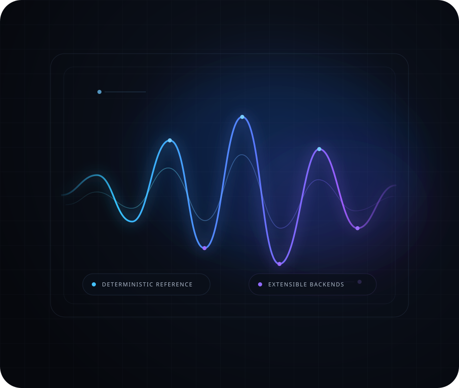

01
Deterministic reference synthesis
A prompt-conditioned procedural renderer provides a reproducible baseline for audio-generation workflows and system qualification.
GenerationPublic project showcase · Development build
Adaptive Audio Synthesis Platform is a proprietary audio-generation systems project designed around deterministic synthesis, durable render orchestration, controlled service delivery, artifact integrity, and a clean path toward future learned audio backends.

01 · Overview
Generating sound is useful. Managing the full lifecycle of a render is harder: requests need clear boundaries, jobs need durable state, artifacts need integrity checks, and delivery needs controlled interfaces.
AASP explores that broader systems problem. The project combines a deterministic reference synthesizer with orchestration, persistence, service, network and audit layers so the generation engine can evolve without rebuilding the surrounding platform.
02 · Capabilities
High-level capabilities of the current development build. Internal implementation details remain private.
A prompt-conditioned procedural renderer provides a reproducible baseline for audio-generation workflows and system qualification.
GenerationGeneration requests move through defined job and artifact lifecycles, separating render intent from execution and delivery.
OrchestrationPersistent job state, recovery behavior and bounded execution controls are designed to make rendering resilient to interrupted processes.
RuntimeRendered outputs carry content hashes and verification metadata so stored artifacts can be checked for unintended modification.
ProvenanceTyped service and network boundaries expose audio jobs through constrained interfaces while keeping the generation core separate.
DeliveryThe current network-facing development layer includes permission-scoped access controls and tamper-evident audit records.
GovernanceSystem view
The public view intentionally stops at functional boundaries. Proprietary implementation logic, private schemas, internal security configuration and source code are not exposed here.
03 · Design principles
The reference path favors repeatable generation behavior and explicit identities for requests and outputs.
Audio logic, runtime concerns, service interfaces and network delivery are treated as distinct responsibilities.
Queues, workers, requests and responses are constrained rather than treated as unbounded resources.
Integrity metadata supports later verification without presenting that mechanism as signed or externally certified provenance.
The surrounding system is designed so a later owned or appropriately licensed learned backend does not require replacing every other layer.
This website explains purpose and capabilities while withholding proprietary implementation detail from the public presentation layer.
04 · Relevance
A controlled platform around experimental or future generation backends.
Workflows where repeatable reference outputs and explicit artifacts are useful.
Exploration of how rendering, persistence, delivery and governance can operate as one coherent system.
A platform boundary prepared for later learned inference work without claiming that model capability exists today.
05 · Project status
The current project includes a deterministic procedural reference renderer and a progressively hardened systems stack around it. It is not presented here as a finished commercial audio product.
Public / private boundary
This GitHub Pages repository contains presentation assets only. It does not contain the private application runtime, proprietary source code, model weights, credentials, internal security configuration, private schemas or deployment secrets.
Part of the TheArchitectMax software & systems portfolio
Explore the wider collection of independently developed software, infrastructure and research-oriented projects.
Open TheArchitectMax HUB